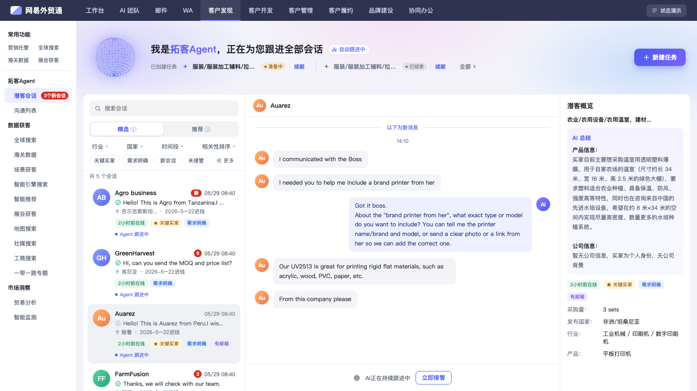

0核心概览
根据笔试题要求，本方案在保持原有业务功能不变的前提下，重点对头部与会话列表进行呈现升级：

明确 Agent 正在自动跟进
通过动态点阵球动效、第一人称陪伴式文案与跳动音频柱状态胶囊，形成三重实时运行信号，建立可靠的自动化托管心智。
秒级识别高价值潜客
构建 L1–L4 四级信息梯度（Who → What → Where/When → Worth），主次分明，帮助外贸业务员在海量会话中一眼定位重点。
状态分级引导行动
将繁杂状态归纳为「需行动 / 系统运行 / 已处理」三层，采用信号灯式的色彩层级与透明度退后机制，驱动高效接管决策。
1设计理念与原则
核心设计风格：清爽、克制、富有智慧生命感。像一位专业高效的业务助理向外贸商家汇报：平稳自动运转，仅在需要决策时举手提示。
色彩克制与语义化
颜色严格对应业务含义而非装饰：红色仅赋予未读/新会话角标（代表需行动）；品牌蓝紫代表 Agent 系统正在自动化运行；中性灰代表已接管/已处理归档。辅助色仅作为小面积决策标签，确保视觉焦点不被稀释。
空间锚定与视线流
坚持「位置即语义」：同类型信息固定出现在卡片的绝对位置（如右上角时间、左下角标签、右下角状态）。用户形成肌肉记忆后，无需逐字阅读即可完成全局盲扫。
2头部设计：强化 Agent 自动跟进感知
头部承担着让用户「明确感知自动化、清晰掌握任务状态、便捷触发主操作」的核心职责。布局从左到右形成自然的视觉流动：Agent 形象 → 运行状态与任务 → 核心行动。
| 设计要点 | 界面表现 | 设计推导与业务价值 |
|---|---|---|
| Agent 动态形象 | 实时旋转的点阵粒子球 + 呼吸微光晕 | 将抽象的“算法跟进”转化为具象的“生命体活动”。运行中保持动态，无任务待命时自动转为静止浅灰，无需阅读文字即知当前工作态。 |
| 第一人称陪伴文案 | “我是拓客Agent，正在为您跟进全部会话” | 以拟人化对话替代冷冰冰的系统状态词，增强产品信任感与被服务感。 |
| 双模运行胶囊 | 带律动音频柱的「自动跟进中」/ 静止「待命中」 | 紧邻主标题，以跳动的微动效提供第二重运行确认，强化正在进行沟通作业的即时感。 |
| 任务状态与操作链路 | 任务名 + 彩色状态标签 +「续期」文字链 +「新建任务」主按钮 | 单行平铺多任务状态（运行中/准备中/已暂停/已结束），右侧放置全页唯一的实心渐变大按钮「新建任务」，确保主次操作层级分明。 |
3信息层级：卡片四层信息架构 (L1–L4)
外贸业务员在面对大量潜客线索时，其决策心理模型是：“这是谁？说了什么？从哪来的？值不值得我现在人工介入？” 为此，本设计将卡片信息解构为严格的四级梯队：
通过字号梯度（从大到小）、字色对比度（深到浅）与间距亲密性，形成自然的阅读流。卡片内深色文字仅分配给 L1 和 L2，避免非关键信息干扰视线。
| 信息层级 | 承载内容 | 认知逻辑与视觉映射机制 |
|---|---|---|
| L1主标识 | 买家名称、公司全称 | 第一识别锚点（Who）：用户扫视列表时最先定位客户身份。赋予全卡片最高字重与最深字色，未读状态下进一步加粗（700），形成最强的第一视觉落点。 |
| L2核心内容 | 最新沟通消息预览 | 即时上下文（What）：单行截断展示买家最新表达，帮助业务员无需进入详情即知晓会话进展。未读时文字加深并伴随绿色对勾，直观传递有新消息产生。 |
| L3辅助属性 | 买家国别、进线日期、最近时间 | 背景决策信息（Where & When）：作为判断采购时差与客户来源的辅助背景。采用弱化的中性灰色彩，时间戳固定于卡片右上角，国别与日期紧随消息之后，提供上下文而不争抢主视线。 |
| L4决策标签 | 近期在线、关键买家、需求明确、有邮箱 | 意向度与价值判断（Worth）：外贸成单的关键特征维度（活跃度、资质、采购明确度、联系方式）。以低饱和浅色底衬托彩色文字，统一收拢在卡片底部。业务员只需扫视底部标签组合，即可快速完成“高价值线索优先挑出”的决策。 |
排版节奏与视线流向
4状态层级：三级业务状态与视觉映射
会话列表中涉及的状态维度极多（新进线、未读消息、Agent 跟进中、人工已接管、已读已跟进等）。如果平铺所有状态，界面将陷入混乱。本设计按「是否需要人工立即介入」的紧迫度维度，将业务状态提炼为 3 个层级：
| 状态层级 | 包含状态场景 | 视觉表现特征 | 设计逻辑与优先级 |
|---|---|---|---|
| ① 需行动 | 新会话进线、买家发来未读消息 | 高饱和红色胶囊角标（「新」或未读计数）、买家名称加粗、消息预览变深、对勾变绿 | 最高优先级（P0）：红白高对比是全卡片唯一的警示色彩，强制抓取注意力，促使用户第一时间发现并评估是否介入。 |
| ② 系统运行 | Agent 自动沟通中、正常流转 | 品牌主色（蓝紫）文字 + 呼吸小圆点（「Agent 跟进中」），常规字重，无红色打扰 | 正常进行时（P1）：向用户明确传达“系统正稳健处理中，无需人工操心”，让用户安心聚焦于需行动的高优先级会话。 |
| ③ 已处理 | 人工已接管、会话已完结 | 头像整体降低透明度（55%）与饱和度，文字颜色降一级浅灰，状态圆点变灰（「已接管」） | 退后原则（P2）：已处理的会话整体视觉弱化，沉降到背景层，使未处理的待办会话在列表中自然凸显。 |
① 需行动（新会话）：红色角标形成绝对焦点。
② 系统运行：无红点打扰，主色传达自动托管中。
③ 已处理：整卡透明度降低，自然让出焦点。
业务状态与交互状态的正交解耦
为了避免多重状态叠加时产生视觉混乱，设计上对「业务状态」与「交互状态」进行了严格解耦：
交互状态：仅改变容器底色
悬停 (Hover)、选中 (Selected)、按下 (Pressed) 仅通过卡片背景色变化呈现（如选中为浅灰蓝底色 #f0f1f5），绝不修改内容排布与字色。
业务状态：作用于内容与角标
未读状态与跟进状态通过角标、字重和状态标签呈现。两者正交独立，支持完美叠加（如“选中态 + 未读高亮”，底色变灰的同时红色角标依然清晰突出）。